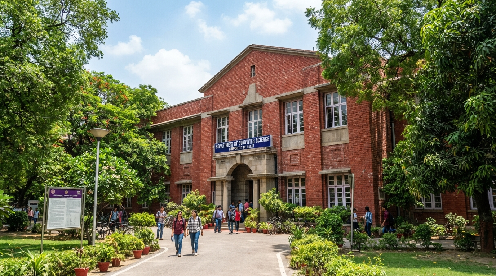
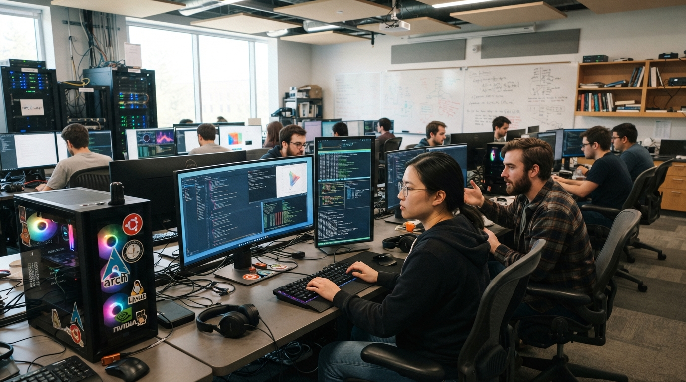
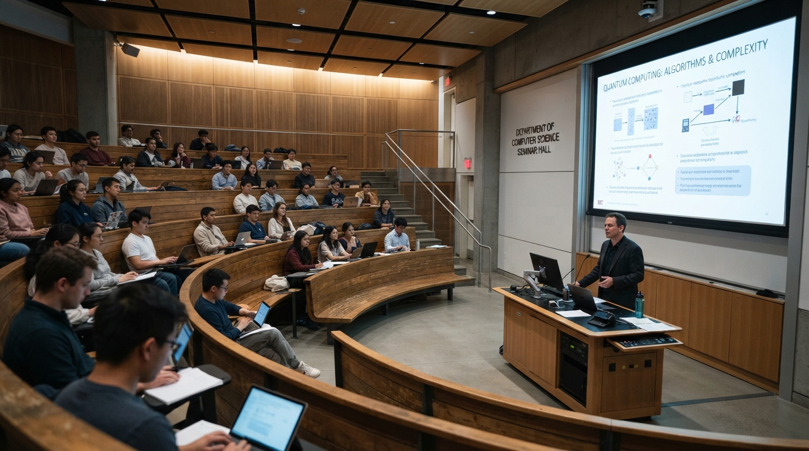

Departmental Overview
Established in 1981 under the Faculty of Mathematical Sciences at the North Campus of the University of Delhi, the Department of Computer Science is a premier center for postgraduate education, undergraduate curriculum coordination, and foundational research in computing. Committed to rigorous theoretical grounding and applied innovation, the department nurtures scholars and technologists across doctoral, postgraduate, and honors degree programs.
Infrastructure & Facilities



Faculty Directory
- Prof. Neelima Gupta Senior Professor Date of Joining:
- Prof. Punam Bedi Senior Professor Date of Joining:
- Prof. Vasudha Bhatnagar Professor Date of Joining:
- Prof. Naveen Kumar Professor Date of Joining:
- Dr. Rajendra Kumar Associate Professor Date of Joining:
- Dr. Meera Sharma Assistant Professor Date of Joining: